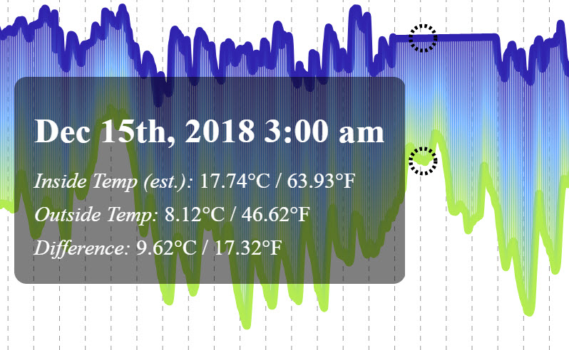

This visualization compares the fluctuation of temperature inside my windowsill in Brooklyn with the temperature outside.
Audience: Parsons Data Structures Course
Data Source: Inside temperature from a real-time temperature sensor connected to a Particle breadboard, from which I collect temperature readings every 30 seconds. Outside temperature from Dark Sky API, from which I collect hourly and daily weather data at the end of each day. Both data sources are stored in an AWS RDS database
Tools: AWS EC2 / AWS RDS / CSS / d3 / Express / Handlebars / Heroku / HTML / JavaScript / Node / PM2 / PostgreSQL

...which I hooked up to a temperature sensor...
After setting up the latest reading coming from my temperature sensor to be accessible through the Particle Cloud API, I established an ongoing process in PM2 and AWS EC2 to execute a node script that pulled down these temperature values into an AWS PostgreSQL database every 30 seconds. Since this temperature sensor was a bit finnicky, I then averaged these values per hour to get representative averages for use in the front-end interface.
For hours with data gaps — either due to missing (due to Particle outages or process issues) or unreliable data (when my sensor started giving me particularly buggy results) — I estimated temperature readings by linearly progressing values between the two last reliable data points on either side of the outage:
Using the Heroku Scheduler tool, I executed a node script that connects to Dark Sky's Time Machine API and writes hourly and daily weather data to AWS PostgreSQL tables at the end of each day (at 12:30 AM). This data pull includes a multitude of helpful data points on the day's weather, including the hourly temperature readings used in my front-end visualization.
I collected both inside and outside temperature for almost two months — from November 8th to December 31st, 2018.
My visualization implements a difference chart, which fills in the space between lines to highlight a greater-than and less-than differences over time.
I also include a responsive hover-over user interaction that provides details on the specific inside temperature (with a designation for estimated temperatures), outside temperature, and difference between the two at any point in the timeframe visualized.
Alcoholics Anonymous Meeting Finder

Like this project? Want to get in touch? Reach out!
{kind=link}